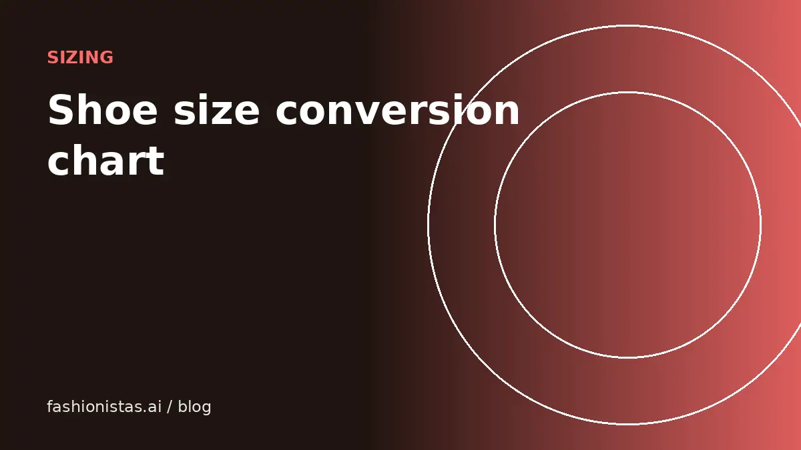

Shoe size conversion: US, UK, EU and centimeters

Buying secondhand shoes means dealing with US, UK, EU and Japanese sizing, men's and women's scales, and brands that don't agree with each other. This guide gives typical conversions, explains the quirks, and shows the most reliable method: knowing your foot length in centimeters and checking each brand's own chart.
Women's shoe sizes
Typical conversions for women's shoes. Brands differ by up to half a size, so use this as a starting point.
| US women's | UK | EU | Foot length (cm, approx.) |
|---|---|---|---|
| 5 | 3 | 35.5 | 22 |
| 6 | 4 | 36.5 | 23 |
| 7 | 5 | 37.5 | 23.5 |
| 8 | 6 | 38.5 | 24.5 |
| 9 | 7 | 40 | 25.5 |
| 10 | 8 | 41 | 26 |
| 11 | 9 | 42 | 27 |
The rough rule: UK women's is US women's minus 2.
Men's shoe sizes
| US men's | UK | EU | Foot length (cm, approx.) |
|---|---|---|---|
| 7 | 6 | 40 | 25 |
| 8 | 7 | 41 | 26 |
| 9 | 8 | 42.5 | 27 |
| 10 | 9 | 44 | 28 |
| 11 | 10 | 45 | 29 |
| 12 | 11 | 46 | 30 |
| 13 | 12 | 47.5 | 31 |
The rough rule: UK men's is US men's minus 1. EU numbers vary noticeably between brands, so the centimeter column is often the most reliable.
Converting between men's and women's sizes
Many sneakers are sold in unisex or men's sizing, which matters a lot secondhand.
- US women's is usually US men's plus 1.5. A men's 8 is about a women's 9.5.
- Some brands use a difference of 1 or 2 instead of 1.5, so check the brand's chart.
- UK and EU sizes are often the same for men and women, which is one reason sellers include them.
If a listing just says "size 8", ask whether it's men's or women's. That one question prevents many returns.
Why brands differ
Every brand uses its own lasts, the foot-shaped forms shoes are built on. A 9 in one brand can feel like an 8.5 or 9.5 in another. Some well-known patterns sneaker buyers often mention:
- Some running and lifestyle models run narrow or short, and people go up half a size.
- Some boots run large, and people go down half a size.
- Width matters too: many brands offer wide versions, labeled D/2E/4E for men or W for women.
Because these patterns change by model and over time, the most reliable source is the brand's own size chart plus recent reviews of the specific model.
How to measure your foot
Measure once and you'll be able to convert any size reliably.
- Stand on a sheet of paper against a wall, heel touching the wall, wearing the kind of socks you'd wear with the shoes.
- Mark the tip of your longest toe. Get someone to help, or use a book held flat against your toes.
- Measure from the wall to the mark in centimeters.
- Do both feet and use the longer one.
- Measure in the evening, when feet are slightly larger.
Compare your measurement with each brand's chart. Many charts list foot length in centimeters or Mondopoint, which is essentially foot length in millimeters.
Buying secondhand shoes: what to check
- Insole length. Ask the seller to measure the insole from heel to toe. Compare it with the insole of a pair you own that fits.
- Wear pattern. Used shoes mold to their owner's feet. Heavily worn soles or a collapsed heel counter may not feel right for you.
- Width. Ask if the listing doesn't say.
- Authenticity. For sneakers, check our guide to spotting fake sneakers.
- Cleanliness. Many secondhand sellers clean shoes before shipping, and you can clean and disinfect insoles yourself or replace them.
For clothing sizes, see our clothing size conversion guide.
Half sizes, kids' sizes and Japanese sizing
Half sizes typically add about a third of a centimeter of length. If you are between sizes, decide by the shoe type: go up for running shoes and boots worn with thick socks, and down for shoes that stretch, like leather loafers.
Kids' shoe sizes in the US use a separate scale (toddler sizes up to about 13C, then youth sizes 1Y to 7Y). Youth sizes overlap with adult sizes: a youth 7Y is roughly a men's 7 and a women's 8.5, which is why some smaller adults buy "GS" (grade school) sneakers for less.
Japanese shoe sizes are simply foot length in centimeters, such as 25 or 26.5, which makes them the easiest to convert once you know your measurement.
Shoe widths explained
Width is the other half of fit. US widths use letters: for men, D is standard, 2E (or EE) is wide and 4E is extra wide; B is narrow. For women, B (or M) is standard, D or W is wide, and AA or 2A is narrow. Many listings don't mention width because the shoe is standard, but if the size tag shows a letter other than D (men's) or B (women's), it is worth noting. UK and EU brands often express width differently, by fitting names or numbers, so check the brand's chart.
Sneaker sizing quirks to know
Sneaker buyers often discuss sizing by model, and a few general patterns come up again and again. Some performance running shoes run snug, so many people go up half a size. Some classic court and basketball models are roomy, so people stay true to size or go down half. Grade school (GS) sizes are sold in youth sizing and can be a cheaper way for smaller feet to buy popular models, though materials can differ from adult pairs.
Because these patterns change from model to model and even between releases, the most reliable approach for a secondhand purchase is to compare the insole length the seller measures with the insole length of a pair you own in the same brand that fits well. Ask the seller to measure from the back of the heel to the tip of the insole, flat, in centimeters. If you own the same model, compare like for like.
For buyers outside the US
If you're shopping a US listing from abroad, or a European listing from the US, convert using the brand's chart, not a generic one. Brand charts list US, UK, EU and centimeter sizes side by side for that brand's lasts. When the seller only gives one system, ask for the full size tag photo, which usually prints three or four systems at once, plus the centimeter or Japanese size.
For sellers: list sizes clearly
If you sell shoes, include all of this in the listing: the size exactly as printed on the tag, whether it's men's or women's, UK and EU sizes from the tag, and the insole length in centimeters. Add a clear photo of the size tag. It saves you messages and returns. Our sneaker selling guide covers the full listing, and the listing tool can read the size tag from your photo.
FAQ
What is a US women's 8 in UK and EU?
A US women's 8 is usually a UK 6 and an EU 38.5 or 39, depending on the brand.
How do I convert men's shoe sizes to women's?
Add about 1.5 to the US men's size to get the US women's size, so a men's 8 is roughly a women's 9.5. Some brands use 1 or 2 instead.
Is EU shoe sizing the same for men and women?
Usually yes, which is why EU or centimeter sizing is useful for unisex sneakers. Brands still differ slightly.
What's the most accurate way to find my shoe size?
Measure your foot length in centimeters, then compare it with the specific brand's size chart.
Is it safe to buy used shoes?
Generally yes, if they're in good condition and from a trustworthy seller. Check insole length and wear, and clean or replace insoles if you prefer.